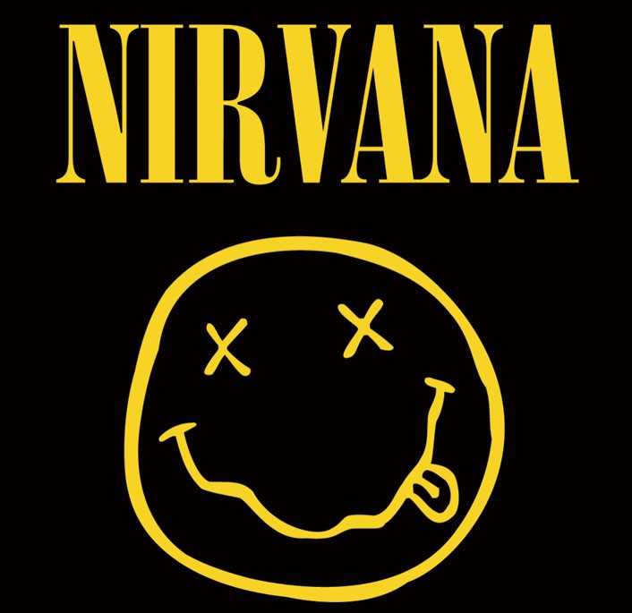

David Eric Grohl (14 de enero de 1969) instrumentista, compositor, actor y productor musical. Nació en Ohio, Estados Unidos. Sus padres se divorciaron cuando era tan solo un niño, así que la vida de Dave transcurrió al lado de su madre. Desde los 12 años conoció la música gracias a que su madre lo inscribió en clases de guitarra, aunque no duró mucho, decidió entonces crear un grupo musical con sus amigos.
Primeros Años
En esa época la música Punk Rock estaba en furor, gracias a un primo suyo conoció y aprendió de varias bandas de ese estilo de música. Durante la adolescencia su familia se mudó a Alexandria, Virginia, localidad de Washington DC. En verano asistió a varios conciertos de punk. De ahí en adelante se dio a conocer por los músicos que lo empezaron a llamar para trabajar con sus bandas. Dave luego de esto comenzó a tocar en diferentes bandas de hardcore punk, haciéndose así un buen renombre entre los músicos punk de la escena. Así es como fue llamado para formar parte de una importante banda de hardcore, llamada Scream en donde tocó la batería. David se desempeñó en la batería siguiendo los pasos de Roger Taylor (Queen) y John Bonham (Led Zeppelin).

Nirvana
En el año 1990 fue llamado para formar parte de la banda de grunge Nirvana, la cual había tenido mucho éxito con su primer disco “Bleach”, Dave aceptó y pasó a formar parte de este grupo. Con Grohl a la batería se grabaron 3 discos oficiales de la banda: Nevermind, In Utero y MTV Unplugged in New York. A lo largo de estos años, Dave desarrolló una gran amistad con Kurt Cobain, guitarrista y cantante del grupo. Mientras estuvo en la banda, salieron a la luz varios temas suyos, algunos fueron temas de Nirvana pero otros no, debido a que Dave sentía que su estilo no encajaba con el de la banda. Con sus propios recursos editó un demo casero llamado “Pocketwatch” que lo repartió entre sus amigos y gente cercana bajo el pseudónimo “Late!”.
Con la muerte de Kurt en el año 1994 la banda se disolvió, y Dave entró en una fuerte depresión debido a este fatídico hecho, lo cual le hizo dejar la música por un tiempo luego de la disolución de Nirvana. pero meses después se encerró en un estudio a grabar Foo Fighters, el cual sería el primer disco de la banda llamada como el mismo disco (Foo Fighters).

Foo Fighters
La banda fue formada después del lanzamiento del álbum, ya que Grohl grabó el disco en su totalidad el solo. La formación musical estuvo integrada por Pat Smear, Nate Mendel y William Goldsmith. Rápidamente, empezaron a grabar discos como; The Colour and the Shape, There’s Nothing Left to Lose, y One by One. Se retiraron Pat Smear y William Goldsmith, siendo reemplazados por Chris Shifflet en guitarra y Taylor Hawkins en batería.
Otros Trabajos
Dave siguió incursionando en varios proyectos, como un proyecto de Heavy Metal como baterista de la banda Probot. Igualmente, asumió el papel de baterista en Garbage, Nine Inch Nails y en el álbum Queens of the Stone Age Songs For The Deaf. Para ese momento, mantenía una relación con la fotógrafa Jennifer Youngblood con quien se separó en 1997. Posteriormente, Dave Grohl se casó con Jordyn Blum en el 2003, de esta unión nacieron tres hijas. Es considerado unos de los músicos más ricos del mundo, debido a su variedad de trabajos en proyectos y composiciones ha ganado muchos millones a lo largo de su carrera.
En 2009 adelantó un nuevo proyecto musical junto con el ex bajista de Led Zeppelin, John Paul Jones y el vocalista y guitarrista de Queens Of The Stone Age, Josh Homme, el grupo fue bautizado Them Crooked Vultures, que por el momento solo ha producido un material homónimo lanzado el 16 de noviembre de 2009. Durante todo este tiempo de trabajo sus canciones favoritas y más populares han sido: Everlong, Territorial Pissing, Elephants, These day, Stay away, My hero, All my life, Pennyroyal tea, No one Knows, Reptiles, y por último, Shake your blood. Su fortuna también se la ha ganado en varias producciones de cine, desde 1990 aproximadamente incursionó en este mundo gracias a su popularidad, algunas cintas han sido: The Year Punk Broke, Is It Fall Yet?, Classic Albums: Nirvana – Nevermind, The Muppets, Foo Fighters: Back and Forth, en el año 2013 fue director de Sound City, luego trabajó en Drunk History, una serie de televisión. Dave Grohl también hizo una aparición corta en plaza sesamo y en la película Tenacious D The Pick Of Destiny, interpretando al mismísimo Satanás.